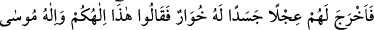
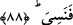
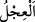
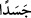

87. Dediler ki: “Biz sana olan vaadimizden, kendi kudret ve irademizle
dönmedik. Fakat biz, o kavmin (Mısırlıların) ziynet eşyasından bir takım ağırlıklar
yüklenmiş, sonra da onları atmıştık; aynı şekilde Sâmirî de atmıştı.”
“Dediler ki:” Biz senin bize emrettiğin hususlarda sebat edeceğimize dâir söz
vermiştik. “Biz sana olan vaadimizden, kendi kudret ve irademizle dönmedik.” Biz
kendi gücümüz ve ihtiyârımızla sana muhâlefet etmedik. Ancak Sâmirî’nin hilesi bize
üstün geldi. Onun bizi bu işe teşvikine aldandık. Kişi bir imtihana ve sınamaya tabi
tutulduğu zaman kendisine hâkim olamaz ve mağlub olur.
“Fakat biz, o kavmin (Mısırlıların) ziynet eşyasından bir takım ağırlıklar
yüklenmiş” yani Mısır’dan çıkmaya karar verdiğimiz vakit onlardan düğün bahânesi ile
ziynetleri ödünç almıştık. “sonra da onları” günahlarından kurtulma ümidiyle ateşe
“atmıştık;” bizim attığımız gibi “aynı şekilde Sâmirî de attı.” Sâmirî, İsrâiloğulları’na
yanında bulunan ziynetleri ateşe atıyormuş gibi göstermişti. Onun için onlar bu sözü
söylediler. Aslında Sâmirî “hayat atı”nın izinden aldığı toprağı atmıştı. Bu toprak neye
karışırsa mutlaka onu değiştiriyordu. Bu, Allâh’ın Rûhu’l-kudüs Cebrâil’e tahsis ettiği
bir keramettir.
88. Bu adam, onlar için, böğürebilen bir buzağı heykeli îcâd etti. Bunun üzerine:
“İşte bu, sizin de, Mûsâ’nın da ilâhıdır. Fakat onu unuttu.” dediler.
“Bu adam,” yâni Sâmirî, ateşe atılan altınlara kattığı toprak ile “onlar için,” önceki
âyetteki sözü söyleyenlere “böğürebilen bir buzağı heykeli icat etti.” Yani ateşte
eriyen ziynet eşyalarından bir heykel yaptı. “ ineğin yavrusu, buzağı demektir. “ lafzı, kanı ve eti olan bir cüsse veya rûhu olmayan altından bir heykel demektir.
Olağanüstü şeylerin sapık bir kimsenin elinden zuhur etmesi imkânsız değildir.
Bağırdığı vakit İsrâiloğulları ona secde ettiler. “Bunun üzerine:” Sâmirî ve ona
aldananlar onu ilk gördükleri anda “İşte bu,” buzağı “sizin de Mûsâ’nın da ilâhıdır.
Fakat onu unuttu.” ve onu aramak için Tûr’a gitti “dediler.”
İşte bu, Allah Teâlâ cihetinden Sâmirî’nin hem söz hem fiille olan fitnesinin sonucunun
hikayesidir. Bu konuyu daha geniş anlatmak ve bunun sonucunda ortaya çıkan inkârı
ortaya koymak maksadıyla hikâye edilmiştir. Yoksa burada sözleri nakledilen kimseler
cihetinden hikâye edilmemiştir. Eğer öyle olsaydı: “bizim için … îcâd etti” denilirdi.
Şüphesiz Allah, böğüren buzağı heykelini, yerinde sâbit duranla ayağı kayanı ortaya
çıkarmak üzere kullarını sınamak için yaratmıştır. Allâh’ın buzağı heykelini
yaratmasından daha şaşılacak olan, onları ve diğer insanları denemek için İblis’i
yaratmış olmasıdır.